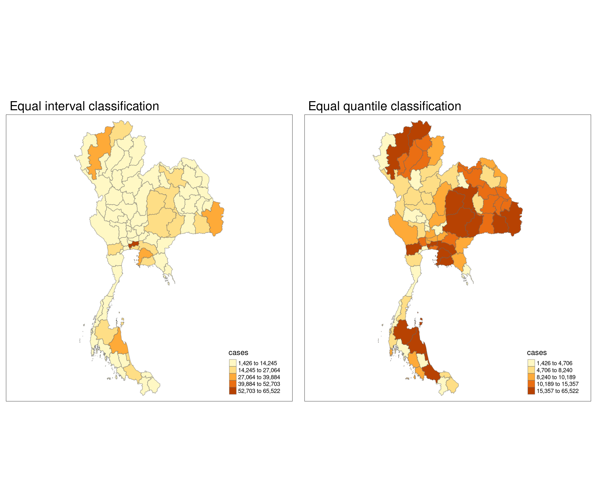

pacman::p_load(sf, tidyverse, tmap, sfdep)Take Home Exercise 2
Drug abuse is a significant public health issue in Thailand, which is situated near the Golden Triangle, one of the largest drug production regions in the world. Thailand’s geographic location and expanding transportation infrastructure have reinforced its role as a major market and transit point for drug trafficking. This has further fueled domestic drug consumption, especially among the youth, with an estimated 2.7 million young people involved in drug use. Of those aged 15 to 19, approximately 300,000 are in need of treatment. This study seeks to perform a geospatial analysis of drug abuse patterns within Thailand, examining the socio-economic conditions and infrastructural factors that influence the distribution and prevalence of drug abuse in various regions.
Main data processing
Import dependencies
Import data
states_sf <- st_read("data", layer = "tha_admbnda_adm1_rtsd_20220121")Reading layer `tha_admbnda_adm1_rtsd_20220121' from data source
`/home/tropicbliss/GitHub/quarto-project/Take-home_Ex/Take-home_Ex02/data'
using driver `ESRI Shapefile'
Simple feature collection with 77 features and 16 fields
Geometry type: MULTIPOLYGON
Dimension: XY
Bounding box: xmin: 97.34336 ymin: 5.613038 xmax: 105.637 ymax: 20.46507
Geodetic CRS: WGS 84drugs_sf <- read_csv("data/thai_drug_offenses_2017_2022.csv")Rows: 7392 Columns: 5
── Column specification ────────────────────────────────────────────────────────
Delimiter: ","
chr (3): types_of_drug_offenses, province_th, province_en
dbl (2): fiscal_year, no_cases
ℹ Use `spec()` to retrieve the full column specification for this data.
ℹ Specify the column types or set `show_col_types = FALSE` to quiet this message.tmap_mode("plot")tmap mode set to plottingtm_shape(states_sf) +
tm_polygons() +
tm_text("ADM1_EN", col = "blue", size = 0.5, remove.overlap = TRUE)Data wrangling
can_be_left_joined <- all(states_sf$ADM1_EN %in% drugs_sf$province_en)# values in states_sf not in drugs_sf
non_matching_values <- setdiff(states_sf$ADM1_EN, drugs_sf$province_en)
non_matching_values[1] "Lop Buri" "Bueng Kan"unique_values <- sort(unique(drugs_sf$province_en))
unique_values [1] "Amnat Charoen" "Ang Thong"
[3] "Bangkok" "buogkan"
[5] "Buri Ram" "Chachoengsao"
[7] "Chai Nat" "Chaiyaphum"
[9] "Chanthaburi" "Chiang Mai"
[11] "Chiang Rai" "Chon Buri"
[13] "Chumphon" "Kalasin"
[15] "Kamphaeng Phet" "Kanchanaburi"
[17] "Khon Kaen" "Krabi"
[19] "Lampang" "Lamphun"
[21] "Loburi" "Loei"
[23] "Mae Hong Son" "Maha Sarakham"
[25] "Mukdahan" "Nakhon Nayok"
[27] "Nakhon Pathom" "Nakhon Phanom"
[29] "Nakhon Ratchasima" "Nakhon Sawan"
[31] "Nakhon Si Thammarat" "Nan"
[33] "Narathiwat" "Nong Bua Lam Phu"
[35] "Nong Khai" "Nonthaburi"
[37] "Pathum Thani" "Pattani"
[39] "Phangnga" "Phatthalung"
[41] "Phayao" "Phetchabun"
[43] "Phetchaburi" "Phichit"
[45] "Phitsanulok" "Phra Nakhon Si Ayutthaya"
[47] "Phrae" "Phuket"
[49] "Prachin Buri" "Prachuap Khiri Khan"
[51] "Ranong" "Ratchaburi"
[53] "Rayong" "Roi Et"
[55] "Sa Kaeo" "Sakon Nakhon"
[57] "Samut Prakan" "Samut Sakhon"
[59] "Samut Songkhram" "Saraburi"
[61] "Satun" "Si Sa Ket"
[63] "Sing Buri" "Songkhla"
[65] "Sukhothai" "Suphan Buri"
[67] "Surat Thani" "Surin"
[69] "Tak" "Trang"
[71] "Trat" "Ubon Ratchathani"
[73] "Udon Thani" "Uthai Thani"
[75] "Uttaradit" "Yala"
[77] "Yasothon" drugs_sf <- drugs_sf %>% mutate(province_en = recode(province_en, "Loburi" = "Lop Buri", "buogkan" = "Bueng Kan"))non_matching_values <- setdiff(states_sf$ADM1_EN, drugs_sf$province_en)
non_matching_valuescharacter(0)Are the main signs of drug abuse in Thailand affected by location, or do they stay the same no matter where you are in the country?
Data wrangling
agg_by_year_sf <- drugs_sf %>%
group_by(province_en, types_of_drug_offenses) %>%
summarise(no_cases = sum(no_cases))`summarise()` has grouped output by 'province_en'. You can override using the
`.groups` argument.unique_values <- sort(unique(agg_by_year_sf$types_of_drug_offenses))
unique_values [1] "conspiracy_cases"
[2] "drug_use_cases"
[3] "export_cases"
[4] "import_cases"
[5] "possession_cases"
[6] "possession_with_intent_to_distribute_cases"
[7] "production_cases"
[8] "suspects_in_conspiracy_cases"
[9] "suspects_in_drug_use_cases"
[10] "suspects_in_export_cases"
[11] "suspects_in_import_cases"
[12] "suspects_in_possession_cases"
[13] "suspects_in_possession_with_intent_to_distribute_cases"
[14] "suspects_in_production_cases"
[15] "suspects_in_trafficking_cases"
[16] "trafficking_cases" agg_by_year_sf <- agg_by_year_sf %>% filter(types_of_drug_offenses == "drug_use_cases") %>% select(1, 3)agg_by_year_sf <- agg_by_year_sf %>% rename(ADM1_EN = "province_en")
state_drug_stats <- left_join(states_sf, agg_by_year_sf) %>% select(3, 17:18) %>% rename(cases = "no_cases")Joining with `by = join_by(ADM1_EN)`Analysis
state_drug_stats <- state_drug_stats %>% arrange(desc(cases))
state_drug_stats$ADM1_EN[1:3][1] "Bangkok" "Chon Buri" "Nakhon Si Thammarat"The state with the highest drug use rate is Bangkok, followed by Chon Buri and Nakhon Si Thammarat. The fact that Bangkok has the highest drug use rate is not particularly surprising, given that it is the most populous Thai city. Chon Buri is home to Pattaya City, which is particularly known for its nightlife and seedy atmosphere.
Visualising drug abuse rate by state
equal <- tm_shape(state_drug_stats) +
tm_fill("cases",
n = 5,
style = "equal") +
tm_borders(alpha = 0.5) +
tm_layout(main.title = "Equal interval classification")
quantile <- tm_shape(state_drug_stats) +
tm_fill("cases",
n = 5,
style = "quantile") +
tm_borders(alpha = 0.5) +
tm_layout(main.title = "Equal quantile classification")
tmap_arrange(equal,
quantile,
asp=1,
ncol=2)
Moran’s I
Before we do any analysis, we need to generate the nearest neighbours of each state. However, some states have no neighbours, and we need to deal with that.

wm_q <- state_drug_stats %>% mutate(nb = st_contiguity(geometry), .before = 1)Warning: There were 2 warnings in `stopifnot()`.
The first warning was:
ℹ In argument: `nb = st_contiguity(geometry)`.
Caused by warning in `spdep::poly2nb()`:
! some observations have no neighbours;
if this seems unexpected, try increasing the snap argument.
ℹ Run `dplyr::last_dplyr_warnings()` to see the 1 remaining warning.summary(wm_q) nb ADM1_EN cases
NULL:16, 17, 24, 33, 41, 77 Length:77 Min. : 1426
NULL:8, 16, 36 Class :character 1st Qu.: 5596
NULL:6, 12, 40, 64, 69 Mode :character Median : 8921
NULL:11, 20, 27 Mean :11890
NULL:10, 21, 29, 52, 76 3rd Qu.:13651
NULL:3, 44, 53, 64, 73 Max. :65522
NULL:9, 13, 14, 30, 35, 38, 42, 63
NULL:2, 36
NULL:7, 13, 14, 18, 28, 46, 47, 51, 75
NULL:5, 21, 31
NULL:4, 19, 20, 22
NULL:3, 50, 58, 65, 69
NULL:7, 9, 38, 46
NULL:7, 9, 22, 35, 51
NULL:24, 34, 55, 74, 77
NULL:1, 2, 17, 30, 33, 35, 36, 42
NULL:1, 16
NULL:9, 23, 28, 47, 48, 75
NULL:11, 20, 22, 25, 28, 51
NULL:4, 11, 19, 25, 27
NULL:5, 10, 26, 29, 31, 52, 68
NULL:11, 14, 19, 51
NULL:18, 39, 47, 48
NULL:1, 15, 34, 41, 43, 49, 77
NULL:19, 20, 27, 28, 37, 48
NULL:21, 31, 32, 59, 68
NULL:4, 20, 25
NULL:9, 18, 19, 25, 48, 51
NULL:5, 21, 52
NULL:7, 16, 35, 42
NULL:10, 21, 26, 32
NULL:26, 31, 59
NULL:1, 16, 41, 42, 43, 63
NULL:15, 24, 49, 52, 71
NULL:7, 14, 16, 30, 36
NULL:2, 8, 16, 35, 66
NULL:25, 39, 48
NULL:7, 13, 43, 46, 60, 63, 70, 72
NULL:23, 37, 48
NULL:3, 44, 64, 69
NULL:1, 24, 33, 43
NULL:7, 16, 30, 33, 63
NULL:24, 33, 38, 41, 49, 63, 70
NULL:6, 40, 64
NULL:0
NULL:9, 13, 38, 47, 54, 60, 61
NULL:9, 18, 23, 46, 54, 75
NULL:18, 23, 25, 28, 37, 39
NULL:24, 34, 43, 67, 70, 71, 72
NULL:12, 62, 65
NULL:9, 14, 19, 22, 28
NULL:5, 21, 29, 34, 56, 60, 68, 71, 76
NULL:6, 57, 73
NULL:46, 47, 56, 59, 61, 68
NULL:15, 62, 74
NULL:52, 54, 60, 61, 68
NULL:53, 73
NULL:12, 65, 69
NULL:26, 32, 54, 68
NULL:38, 46, 52, 56, 61, 67, 71, 72
NULL:46, 54, 56, 60
NULL:50, 55
NULL:7, 33, 38, 42, 43
NULL:3, 6, 40, 44
NULL:12, 50, 58
NULL:36
NULL:49, 60, 71, 72
NULL:21, 26, 52, 54, 56, 59
NULL:3, 12, 40, 58
NULL:38, 43, 49, 72
NULL:34, 49, 52, 60, 67
NULL:38, 49, 60, 67, 70
NULL:6, 53, 57
NULL:15, 55, 77
NULL:9, 18, 47
NULL:5, 52
NULL:1, 15, 24, 74
geometry
MULTIPOLYGON :77
epsg:4326 : 0
+proj=long...: 0
tmap_mode("plot")tmap mode set to plottingtm_shape(states_sf) +
tm_polygons() +
tm_text("ADM1_EN", col = "blue", size = 0.5, remove.overlap = TRUE)
As you can see, Phuket is not physically connected to the mainland. To deal with that, we will manually set the neighbour of Phuket as Phangnga (which is fair given that the only bridge to Phuket is via Phangnga).
We first need to get the index of Phangnga.
which(wm_q$ADM1_EN == "Phangnga")[1] 58wm_q$nb[wm_q$ADM1_EN == "Phuket"] <- as.integer(c(58))Now, we can calculate the weights.
wm_q <- wm_q %>% mutate(wt = st_weights(nb, style = "W"), .before = 1)
wm_qSimple feature collection with 77 features and 4 fields
Geometry type: MULTIPOLYGON
Dimension: XY
Bounding box: xmin: 97.34336 ymin: 5.613038 xmax: 105.637 ymax: 20.46507
Geodetic CRS: WGS 84
First 10 features:
wt
1 0.1666667, 0.1666667, 0.1666667, 0.1666667, 0.1666667, 0.1666667
2 0.3333333, 0.3333333, 0.3333333
3 0.2, 0.2, 0.2, 0.2, 0.2
4 0.3333333, 0.3333333, 0.3333333
5 0.2, 0.2, 0.2, 0.2, 0.2
6 0.2, 0.2, 0.2, 0.2, 0.2
7 0.125, 0.125, 0.125, 0.125, 0.125, 0.125, 0.125, 0.125
8 0.5, 0.5
9 0.1111111, 0.1111111, 0.1111111, 0.1111111, 0.1111111, 0.1111111, 0.1111111, 0.1111111, 0.1111111
10 0.3333333, 0.3333333, 0.3333333
nb ADM1_EN cases
1 16, 17, 24, 33, 41, 77 Bangkok 65522
2 8, 16, 36 Chon Buri 39067
3 6, 12, 40, 64, 69 Nakhon Si Thammarat 35370
4 11, 20, 27 Ubon Ratchathani 35094
5 10, 21, 29, 52, 76 Chiang Mai 33261
6 3, 44, 53, 64, 73 Songkhla 25607
7 9, 13, 14, 30, 35, 38, 42, 63 Nakhon Ratchasima 24762
8 2, 36 Rayong 24679
9 7, 13, 14, 18, 28, 46, 47, 51, 75 Khon Kaen 24539
10 5, 21, 31 Chiang Rai 22070
geometry
1 MULTIPOLYGON (((100.6139 13...
2 MULTIPOLYGON (((100.9719 12...
3 MULTIPOLYGON (((99.77467 9....
4 MULTIPOLYGON (((105.0633 16...
5 MULTIPOLYGON (((99.52512 20...
6 MULTIPOLYGON (((100.5973 7....
7 MULTIPOLYGON (((102.3144 15...
8 MULTIPOLYGON (((101.4421 12...
9 MULTIPOLYGON (((102.7072 17...
10 MULTIPOLYGON (((99.96093 20...nearest_neighbours <- wm_q$nb
longitude <- map_dbl(wm_q$geometry, ~st_centroid(.x)[[1]])
latitude <- map_dbl(wm_q$geometry, ~st_centroid(.x)[[2]])
coords <- cbind(longitude, latitude)
head(coords) longitude latitude
[1,] 100.62353 13.771827
[2,] 101.20167 13.191475
[3,] 99.78752 8.379444
[4,] 105.11153 15.183527
[5,] 98.72821 18.793111
[6,] 100.54540 6.934392par(mar = c(1, 1, 1, 1)) # decrease the excessive margins
plot(wm_q$geometry, border = "lightgrey")
plot(nearest_neighbours, coords, pch = 19, cex = 0.6, add = TRUE, col = "red")
set.seed(27)
bperm <- global_moran_perm(wm_q$cases, wm_q$nb, wm_q$wt)
bperm
Monte-Carlo simulation of Moran I
data: x
weights: listw
number of simulations + 1: 500
statistic = 0.097167, observed rank = 462, p-value = 0.152
alternative hypothesis: two.sidedhist(bperm$res,
freq=TRUE,
breaks=20,
xlab="Simulated Moran's I")
abline(v=0,
col="red")